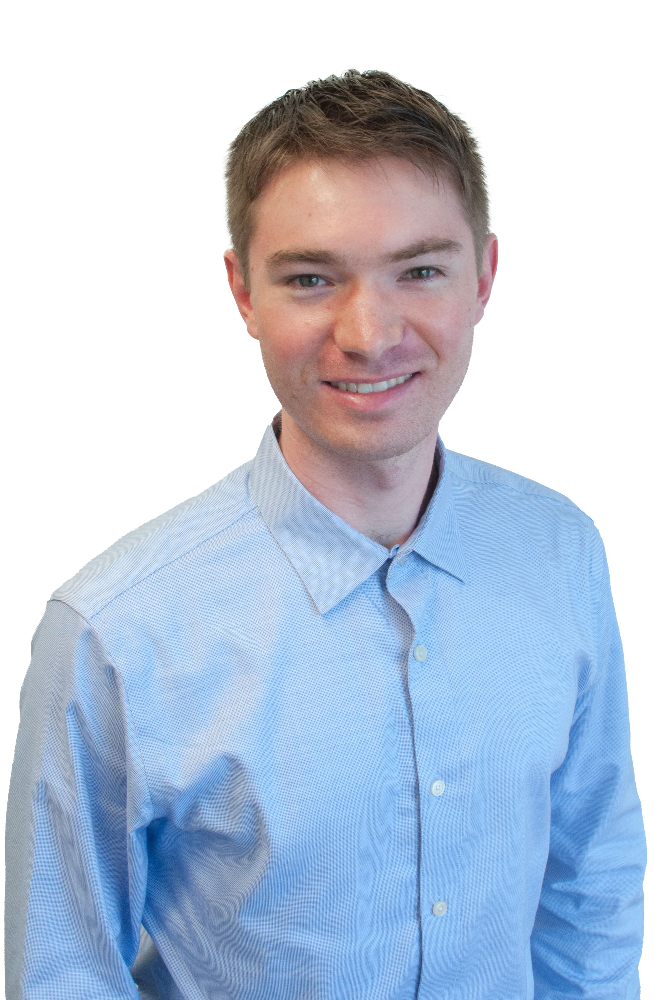
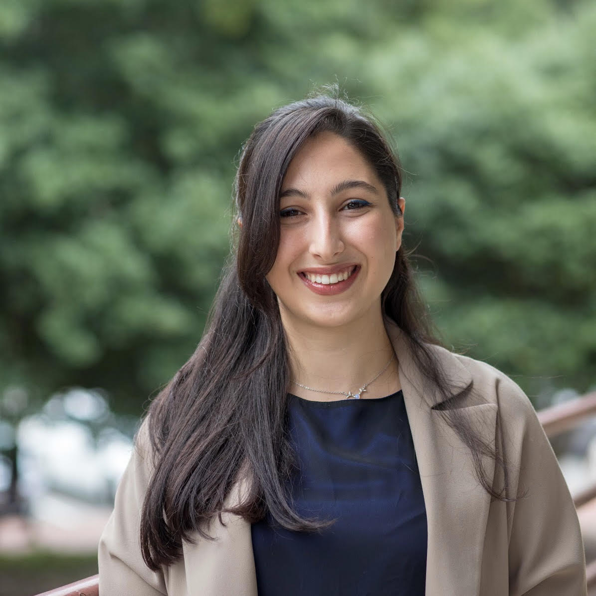
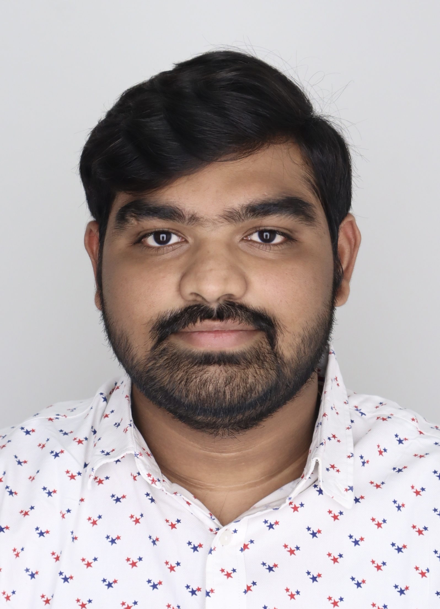

assets/people/group-photo.jpg — recommended 1600×700, ≤300 KB.Principal Investigator

Prof. Yaroslava (Yara) G. Yingling
Prof. Yingling received a B.S. in Computer Science and Engineering from St. Petersburg State Technical University (1996) and a Ph.D. in Materials Engineering and High-Performance Computing from Penn State (2002). She completed postdoctoral research at Penn State Chemistry and the NIH National Cancer Institute before joining NC State University in 2007.
Her research integrates molecular modeling, data science, and AI to accelerate materials discovery for energy, environment, and health applications. She has authored 143 peer-reviewed publications and delivered 140+ invited talks worldwide.
Research Faculty & Staff
3 members


Postdoctoral Fellows
Currently recruiting. Interested postdoctoral candidates with a background in molecular simulations, machine learning for materials, or AI/data science are encouraged to contact Prof. Yingling.
Graduate Students
7 members





Undergraduate Research Assistants
5 members


Alumni
Y-AIMS Lab alumni have gone on to faculty positions, national laboratories, tech companies, and industry R&D roles worldwide.
REU students include: Sanjana Addanki (VT, 2025), Leala Carbonneau (WPI, 2024), Carolina Cunningham (UNC-CH, 2023), Brooklynn Blackwell (Howard, 2022), Amani Reed (UNC-CH, 2018), Leo Sutter (RIT, 2016), Jeremy Loffredo (UVA, 2013), Trisha Dupnock (Clarkson, 2013), Ramyata Upmaka (CMU, 2012), Michael Entz (UA, 2009), and many others.
Also includes many additional undergraduate researchers, REU students, and visiting researchers from institutions worldwide.